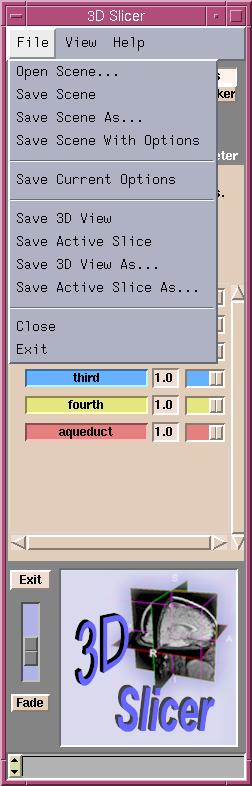

You can save your preferences in Slicer. Among the features you can save are:
- The View Presets that you set under the Slicer
graphic in the Menu window.
- The settings from the Modules tab on the Options
panel.
- The Background Color set using View.
(Note: You can set this differently for each of your View Presets.)
To save your preferences:
- Click File.
A drop-down menu appears.

- Click Save Current Options.
This will save your preferences to a file named
Options.xml in the current directory.
Whenever you run Slicer from that directory, it will find the Options.xml file,
and set things up using your saved preferences.